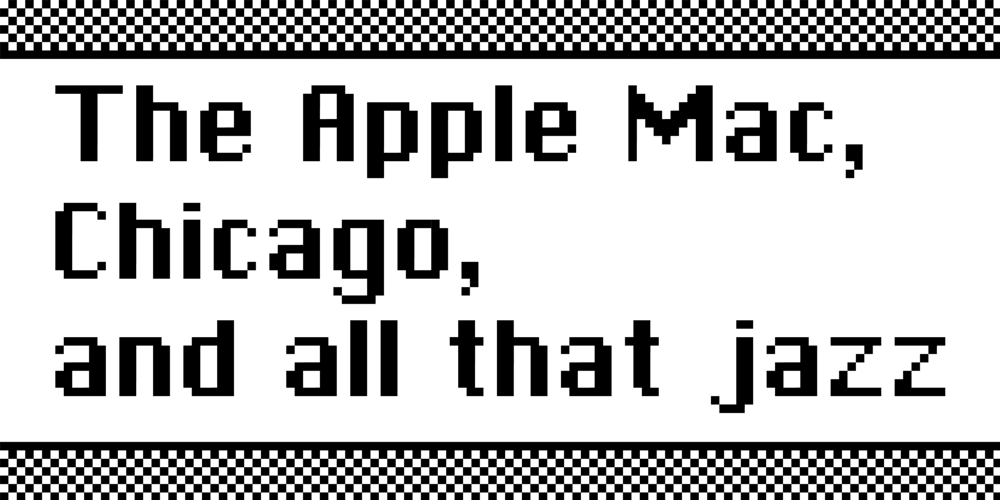
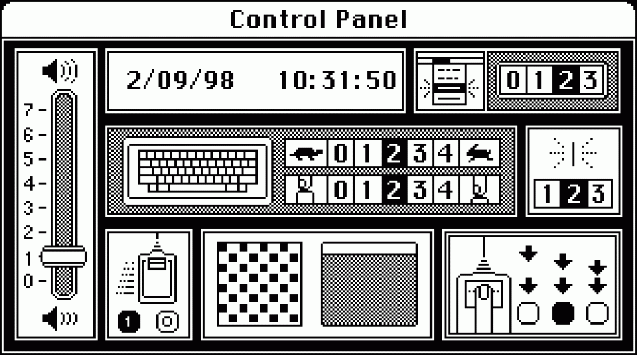

Home
SF MOMA
Chicago
Designed by Susan Kare in 1983
About Chicago
Chicago was one of a series of city-named bitmapped screen fonts designed by Susan Kare for the first Apple Macintosh. It was the most important since it was used for the operating system. Chicago was an original design while the other city fonts were “reasonable facsimiles” of familiar commercial typefaces: New York was derived from Times New Roman; Geneva from Helvetica; and Monaco from Courier. A smoothed TrueType version of Chicago was created by Charles Bigelow and Kris Holmes in 1990. Five years later, Charcoal, designed by David Berlow of The Font Bureau, replaced it as the operating system font for System 8.0. Yet, the original bitmapped Chicago remains one of the quintessential identifiers of Apple computers.
Chicago 60pt
The quick brown fox jumps over the lazy dog
Chicago 45pt
The quick brown fox jumps over the lazy dog
Chicago 24pt
The quick brown fox jumps over the lazy dog
Chicago 14pt
The quick brown fox jumps over the lazy dog
Chicago 9pt
The quick brown fox jumps over the lazy dog

